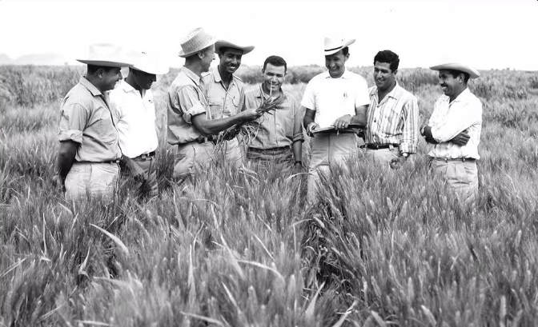

Dr. Norman Borlaug, third from the left, trains biologists in Mexico on how to increase wheat yields - part
of his life-long war on hunger.
The man who saved a billion lives
Dr. Norman Borlaug, third from the left, trains biologists in Mexico on how to increase wheat yields - part
of his life-long war on hunger.